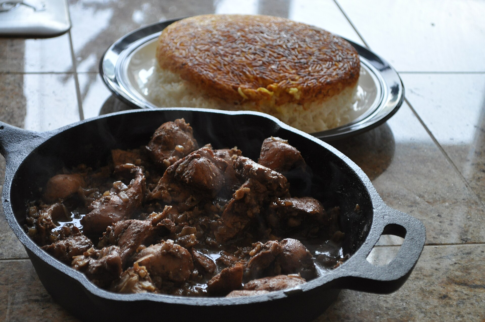

Fecenjoon

Description
Fecenjoon or Fecenjan is an Iranian foodt that can be cooked by Duck or chicken.
This food served with rice usually.
Ingredients (for 8 servings)
- 8 duck or chicken legs
- salt and freshly ground black pepper to taste
- 2 tablespoons vegetable oil
- ¼ cup water, or as needed
- 3 tablespoons olive oil, or more to taste
- 2 cups diced yellow onion
- 1 teaspoon ground turmeric
- ½ teaspoon ground cinnamon
- ⅛ teaspoon ground nutmeg
- 6 cups chicken broth, or more as needed
- ⅔ cup pomegranate molasses
- 3 cups walnut halves
- ¼ cup honey